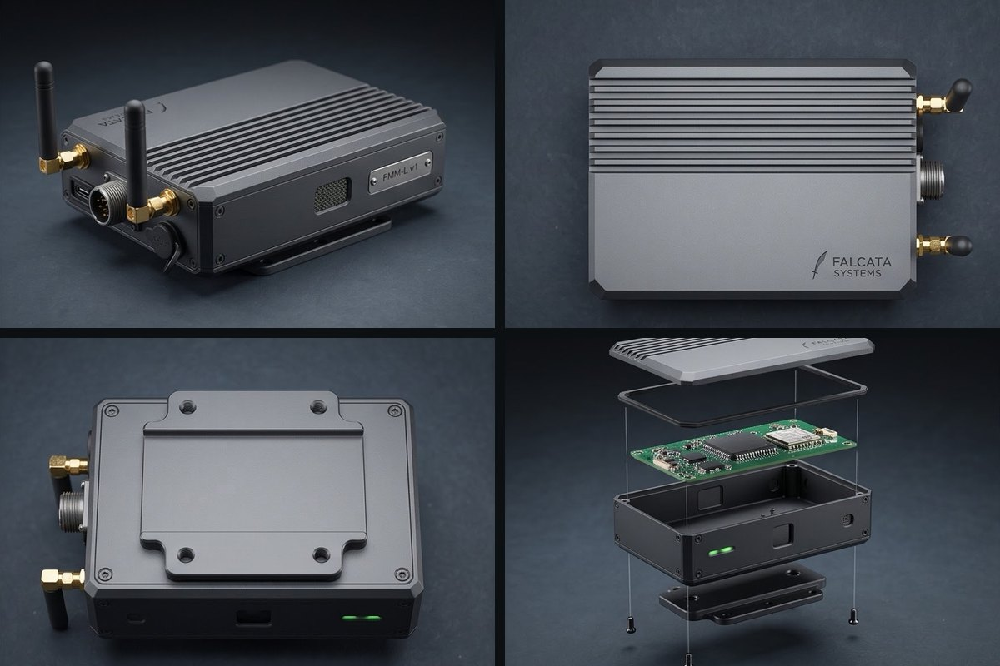

A Falcata mantém sistemas não tripulados ligados e a navegar quando o rádio e o GPS são bloqueados, em qualquer veículo que o cliente já tenha.
O jamming e a negação de GPS interrompem as operações não tripuladas antes mesmo de a missão começar. O Falcata Mission Module (FMM-L) é uma pequena caixa que se instala em qualquer drone ou veículo terrestre e mantém vivos tanto a ligação de comando como a solução de navegação.
Render conceptualMódulo de missão FMM-L. Estudo de design, não é uma unidade de produção.
O Problema
O jamming e o spoofing quebram a missão, não o veículo
O jamming de rádio corta o operador do veículo. O jamming e o spoofing de GPS alimentam-no com uma posição falsa. Qualquer um dos dois costuma bastar para terminar uma missão, e a guerra eletrónica moderna faz ambos por rotina — contra drones, robôs terrestres e tudo o que há pelo meio.
FMM-L v1
Quatro funções, uma caixa
O FMM-L instala-se no piloto automático já existente do veículo e faz exatamente quatro coisas.
Ligação C2 Cifrada
Comando e telemetria circulam por um canal cifrado com AES-128, para que o operador mantenha uma linha segura com o veículo mesmo em condições contestadas.
Relay e Malha
Os módulos FMM-L reencaminham o tráfego uns dos outros, alargando o alcance da ligação de comando e telemetria sem infraestrutura adicional em terra.
Agnóstico de Veículo
Funciona com qualquer piloto automático ArduPilot ou PX4 através de MAVLink — sem necessidade de trabalho de integração por parte do cliente.
Monitorização de Integridade GNSS
Deteta jamming e spoofing de GPS em tempo real e alerta o operador, em vez de deixar passar uma fixação de posição incorreta sem ser notada.

Render conceptualFMM-L: vistas traseira, superior, inferior e explodida.Render conceptualFMM-L montado num veículo terrestre não tripulado.
O Que É — E O Que Não É
Um canal C2 resiliente, não uma ligação de vídeo
O FMM-L é um canal de comando e controlo resiliente e um monitor de integridade GNSS. Complementa a ligação de vídeo já existente no veículo — não a substitui, não transporta vídeo e não é uma ligação de alta largura de banda. Não dizemos que é "impossível de bloquear"; dizemos que mantém o operador no comando e o avisa quando algo está errado com a fixação de GPS.
Demonstrador
NÓTUS: a provar o FMM-L em voo
O NÓTUS é o planador de asa fixa da Falcata — o demonstrador de voo que usamos para validar o hardware e o software do FMM-L em condições de voo reais, antes de ir para o veículo do cliente. O NÓTUS não é o produto. O FMM-L é.
Estado
Da bancada ao terreno
O FMM-L é um protótipo em desenvolvimento ativo. Estamos em fase pré-receita, ainda sem clientes.
Fabrico EuropeuComponentes UE / NATOBaixo Custo por NóMAVLink NativoMonitorização de Integridade GNSSDuplo Uso
Baixo custo por nó significa que o FMM-L cabe em veículos baratos e sacrificáveis ("attritable"), não só nos caros. Foi concebido para defesa e para proteção civil — combate a incêndios florestais, busca e salvamento — onde quer que sistemas não tripulados precisem de continuar a funcionar sob jamming e negação de GPS.
Vamos falar sobre a sua plataforma.
Quer esteja a avaliar o FMM-L para um veículo específico, quer esteja a explorar o financiamento desta fase inicial, estamos disponíveis para o informar diretamente.